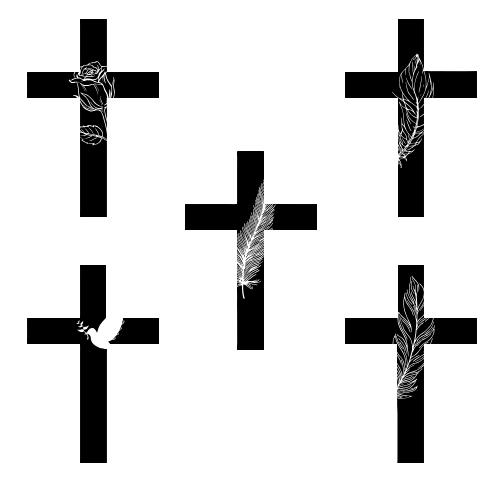
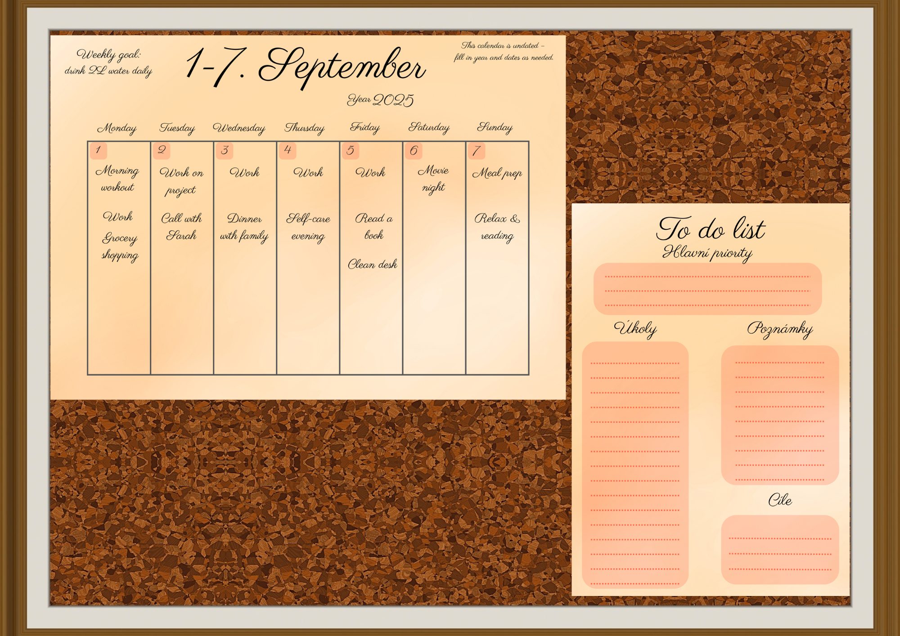

V portfoliu najdete moji různorodou tvorbu – od grafického designu a streamové grafiky, přes fotografie a kresby
až po odbornější práce spojené s preparací.
Každý projekt má vlastní náladu i příběh, dohromady ale ukazují moji cestu kreativním světem a důraz na detail i estetiku.
Po rozkliknutí obrázku se zobrazí větší náhled s krátkým popiskem.
V rámci sekce lze procházet další ukázky šipkami nebo kliknutím přímo na obrázek, kliknutím mimo se detail zavře.
Grafický design
Tato část portfolia ukazuje mou cestu grafikou v širokém spektru žánrů –
od identity značky a návrhů loga, přes tiskoviny a kreativní poukazy
až po interiérové vizualizace. Spojuji v nich experiment s barvou, typografií i prostorem,
ale vždy s důrazem na jednoduchost a srozumitelnost.
Logo ED - NávrhyPohřební služba – návrh logaGastro voucheryWellness voucheryVzdělávací snídaně – plakátPlánovačePlánovač – ukázka použitíNávrh interiéru – byt & kuchyně
Různé varianty loga „ED – Elkira Design“
červených a neutrálních barvách. Ukázka typografie a barevných kombinací
v podobě loga i návrhu vizitky.
Cílem byla minimalistická a profesionální vizuální identita.
Kolekce poukazů na jídlo a nápoje navržená v jednotném stylu.
Každý voucher má vlastní barevnost, aby byly jednotlivé motivy snadno rozlišitelné,
přesto však tvoří konzistentní vizuální celek.
Kolekce poukazů pro wellness a kosmetické služby.
Jemná barevná paleta a motivy listů navozují klidnou atmosféru,
která odpovídá prostředí lázní a spa salonů.
Návrhy spojují jednoduchost s decentní grafikou, aby působily elegantně a univerzálně.
Návrh plakátu pro odbornou akci s důrazem na přehlednost a vizuální hierarchii informací.
Jednotná typografie, jemná barevnost a doprovodné ikony pomáhají rychle najít klíčové údaje – téma, čas, místo a řečníky.
Grafické návrhy měsíčního a týdenního plánovače
s doplňkovým přehledem návyků.
Jemná barevnost a čisté rozvržení podporují přehlednost a snadné použití v každodenním životě.
Spojení estetiky a funkčnosti vytváří univerzální šablony pro organizaci času i osobních cílů.
Vizualizace reálného využití plánovače. Součástí je týdenní rozvrh i To-do list pro úkoly, poznámky a priority.
Mockup ukazuje praktické využití návrhu a jeho přehlednost v každodenním kontextu, čímž propojuje funkčnost s estetickým zpracováním.
3D vizualizace interiéru bytu vytvořená v programu Home By Me, s kuchyní navrženou v plánovači IKEA.
Projekt se zaměřuje na dispoziční řešení a barevnou harmonii prostoru, přičemž propojuje funkčnost s moderní estetikou.
Stream grafika
Ukázky grafiky vytvářené pro streamy a online prostředí.
Patří sem obrazovky pro vysílání, informační bannery i sada emotů.
Design kombinuje pixelartový styl s výraznou typografií a má za cíl být hravý, čitelný a zapamatovatelný.
Dvojice obrazovek pro stream – varianta „Offline“ a obrazovka s oznámením krátké pauzy (brb - be right back).
Design je laděný do neonového stylu na hvězdném pozadí, doplněný o prostor pro kontakt (ukázkový Instagram).
Série pixelových emotikonů
vytvořená jako cvičení konzistence stylu a práce s výrazem.
Fotogalerie
Fotogalerie zachycuje kontrast mezi detaily přírody a širšími pohledy na krajinu i prostředí.
Od jemných květů a hmyzu až po zimní scenerie a pohled z letadla –
společným jmenovatelem je hra světla, linií a atmosféry.
Bílé květyČekankaPlodMotýlZimní jezírkoLavička v ziměTrávy v ziměLetadlo nad mraky
Letadlo nad mraky – západ slunce a pocit volnosti při cestování.
Kresby
Ukázky kreseb vytvořených různými technikami – tužkou, uhlem i akvarelem. Jde převážně o studie a experimenty,
které mi umožňují rozvíjet práci se světlem, texturou a barvou.
Výsledná montáž ryb - barvení pomocí airbrushe.
Práce probíhala ve dvojici, což umožnilo kontrolu detailů i celkového výsledku.
Díky kombinaci barev a práce s tvarem působí kompozice přirozeně a dynamicky.
Práce s airbrushem při barvení ploutví.
Tato část procesu ukazuje jemnou ruční práci a soustředění na realistické podání barev, které je zásadní pro výsledný vzhled preparátu.
Detailní práce při fixaci brouka pomocí pinzety.
Tato fáze je klíčová pro správné uspořádání končetin a celkový tvar, aby preparát působil přirozeně a mohl být zařazen do sbírky.
Vědecká kresba vytvořená na základě pozorování pod mikroskopem.
Kresba slouží k zachycení klíčových znaků brouka, které nemusí být na fotografii vždy dostatečně zřetelné.
Ukázka samotného procesu: pozorování detailů hmyzu pod mikroskopem a jejich přenášení na papír.
Propojení vědeckého pozorování a kresby pomáhá k přesnému zachycení morfologie.
Ukázka herbářového exempláře – Orsej jarní (Ficaria verna).
Rostlina je vylisovaná, upevněná na herbářovém archu a doplněná o lokalizační údaje.
Díky jasně žlutým květům působí herbářová položka esteticky a zároveň zachovává odborný standard.


 Proces
Proces